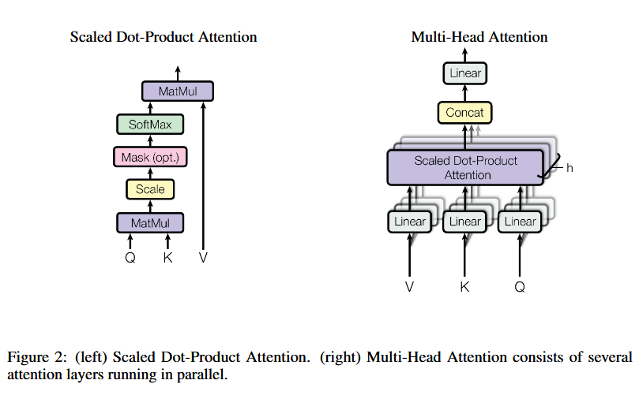

10 MULTI-HEAD ATTENTION
Understanding Attention
From One Attention to Multiple Heads
First, we will use a simple example to understand what Scaled Dot-Product Attention actually does.
Then, we will update its inputs and run several attention operations in parallel to build Multi-Head Attention.
The √dk term scales the scores for stability. We will set it aside for now and focus on the core attention process.
Roadmap — Understand one attention operation, then expand it into multiple parallel heads.
Attention(Q, K, V)
=
softmax
(
QKT √dk )
V

01 Scaled Dot-Product Attention → 02 Multi-Head Attention
We will first ignore the scale term and unpack the left-hand process with a simple example. Then we will return to the full multi-head structure on the right.